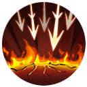
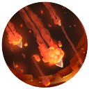

| 主頁 | 故事起源 | 英雄介紹 | 挑戰者技能 | 遊戲引導 |
| 技能 | 技能描述 |
|---|---|
|  | 怒射 勇的第五次普通攻擊將會造成七段傷害，每段對英雄造成目標最大生命值{0}%(每200點額外物理攻擊增加1%)的物理傷害( 可爆擊)，對非英雄單位造成{1}點物理傷害 |
爆裂箭矢 勇射出一支爆裂箭矢，對落點範圍內的敵人造成{0}(+{1})點物理傷害與持續2秒的25%減速，並使下次普 攻變為【怒射】。 |
|
百步穿楊 勇短暫蓄力之後朝指定方向發射飛行物，可擊退並暈眩身前的所有敵人（飛行途中不會對小兵和野怪造成傷害）。 命中敵方英雄後會在一定範圍內對包含野怪和小兵在內的所有敵方單位造成{0}(+{1})點物理傷害，同時附帶目標已損生命{2}%的魔法傷害 (魔法傷害部分對怪獸最多造成1000點傷害)，並使下次普攻變成被動的強化普攻。 |
|
|  | 天降神箭 勇召喚一個可以緩慢向前移動的法陣，獲取範圍內的視野並每秒對其中的一個隨機敵人造成{0}(+{1})點物理傷害，持續12 秒。 同時使下次普攻變成被動的強化普攻。 |